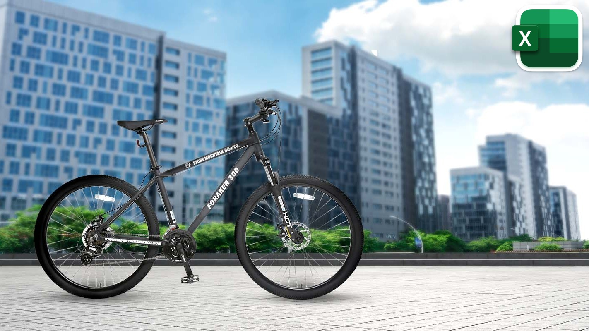
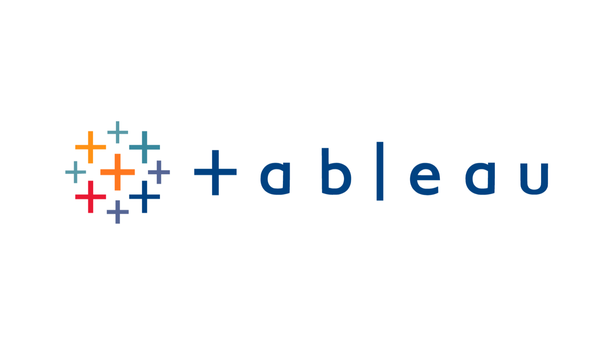

Bank Loan Performance Project
In this project, we analyze a bank's loan portfolio to gain insights into key financial metrics and assess the risk associated with different loans. The primary KPIs analyzed are total loan applications, total funded amount, total received amount, average interest rate, and average debt-to-income ratio (DTI). The analysis aims to provide actionable recommendations for improving loan management and decision-making.

This project explores a dataset from a fictional bike sales business to help the company better understand its customer base and identify which demographics are most likely to purchase bikes. The analysis was performed using Microsoft Excel, with a focus on creating an interactive dashboard to visualize key trends and insights.
This project provides an exploration of the COVID-19 pandemic using global datasets. The analysis focuses on understanding the spread and global impact of the virus. Key metrics such as total cases, total deaths, and the percentage of the population infected are examined to offer insights into the pandemic's progression over time.
The COVID-19 Global Vaccine Tracker project aims to visualize the global vaccine distribution. Key aspects include the number of people partially and fully vaccinated, the percentage of the population without any vaccine, and the relationship between vaccination rates and economic factors like GDP.

This is where all my Tableau Dashboards are.